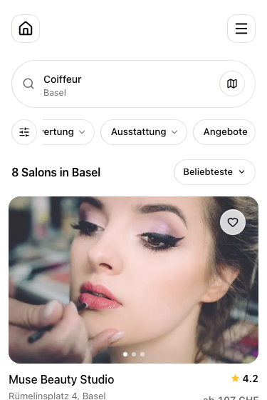
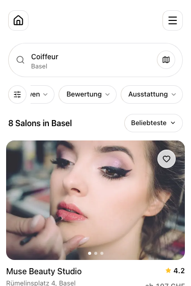
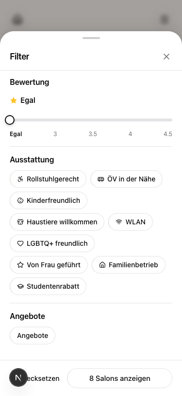
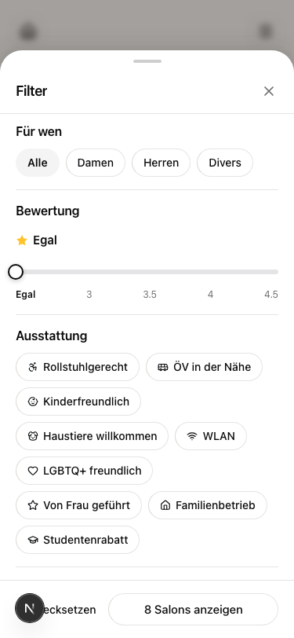

Both filter codes work correctly (verified live 2026-07-06). The problem is the data: no salon has a deal configured, and all 264 active services are tagged for everyone, so "Angebote" always returns 0 results and "For whom" never narrows anything. Captures below are the real /de/basel/coiffeur route with only the target element removed.
Recommendation: hide while empty (right column), for both. The pill, sheet group, and sort option render only when live data can actually discriminate (at least 1 deal; at least 1 gender-specific service). They reappear automatically the moment a salon adds a deal or a gendered service. Alternative you can pick instead: keep the UI and seed real deals / retag services, which changes live marketplace data and search results.
1. Angebote (deals) pill
Today it always leads to "0 results". Hidden variant: the pill row simply ends after Ausstattung.
Current: pill always shown

Hidden while 0 deals exist

2. Angebote group in the filter sheet
Current

Hidden while 0 deals exist

3. For-whom pill
Today selecting Damen or Herren changes nothing (every service is tagged both).
Current: pill always shownHidden while services cannot differ